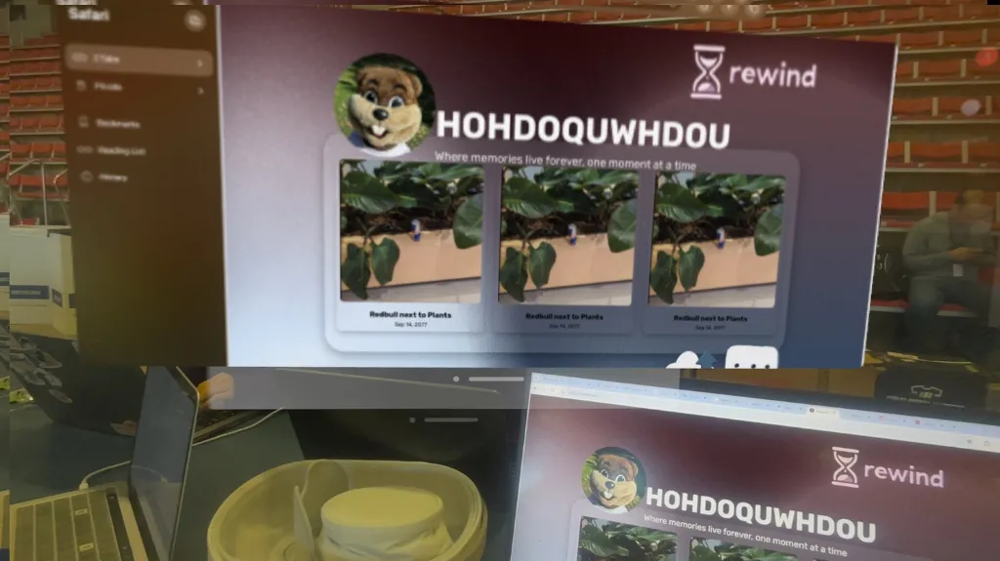
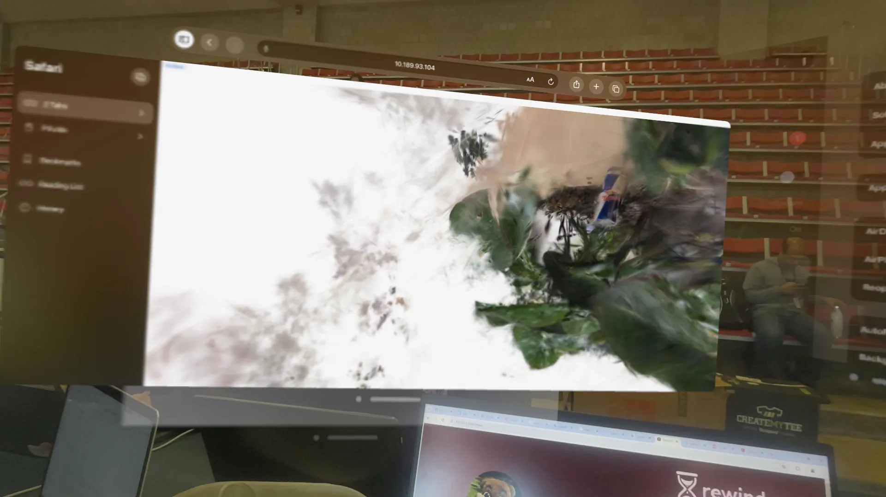
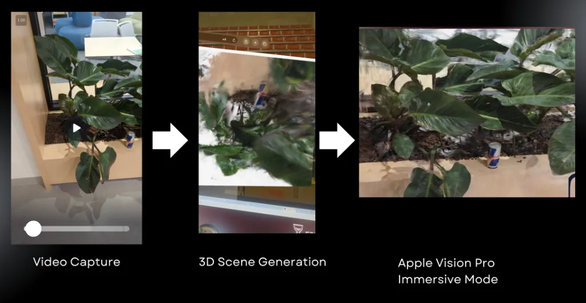
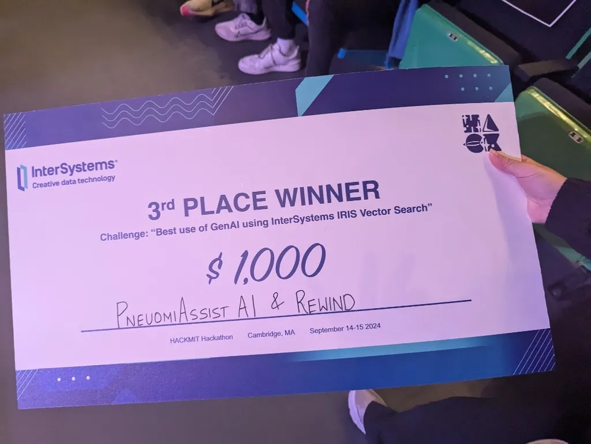

Overview

Intelligent Memory Retrieval & Interaction
Rewind leveraged InterSystems IRIS Vector Search to allow users to search for memories based on keywords, dates, or people. With langchain integration, the search accuracy continuously improves by adapting to user behavior and preferences.
The application features a user-friendly timeline navigation system that simplifies memory browsing. Additionally, archive sharing makes it easy to share a user's memory archive, fostering a shared interactive experience.

3D Scene Generation
Users can upload videos, and through Gaussian splatting, Rewind generated interactive 3D scenes available for immersive AR exploration via Apple Vision Pro or through the web interface.
By transforming 2D video sequences into spatial 3D splats, the system creates interactive environments that can be explored from any angle, preserving physical contexts alongside virtual elements.

